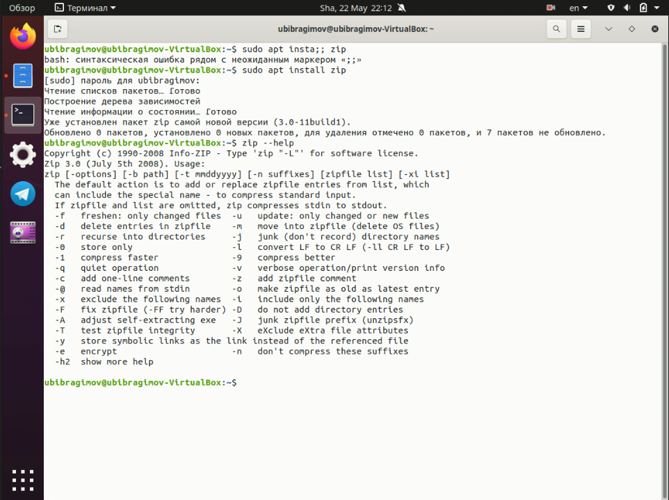
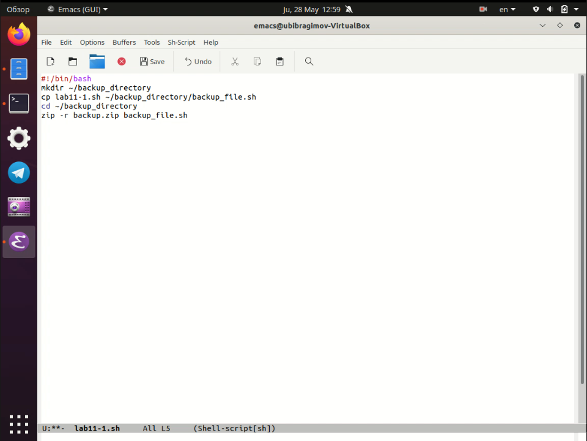
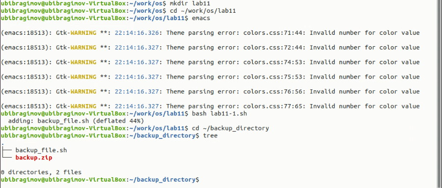
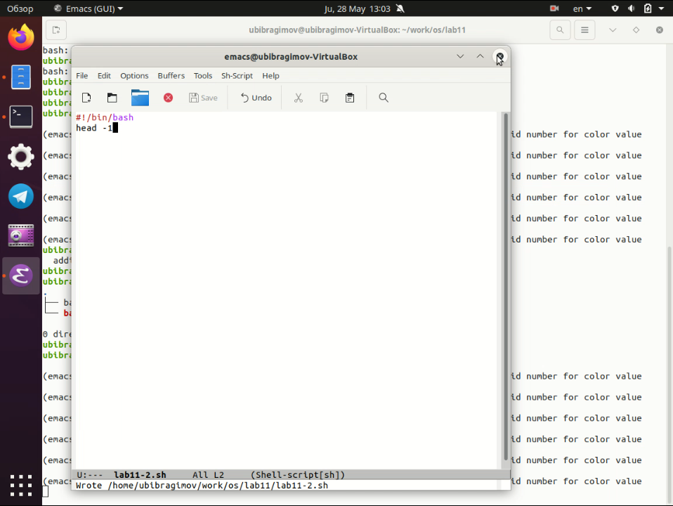
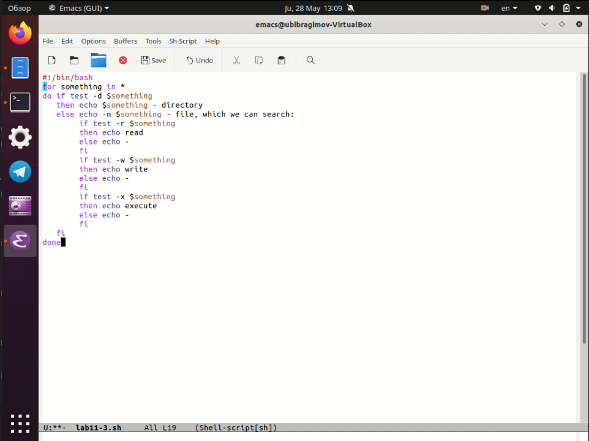
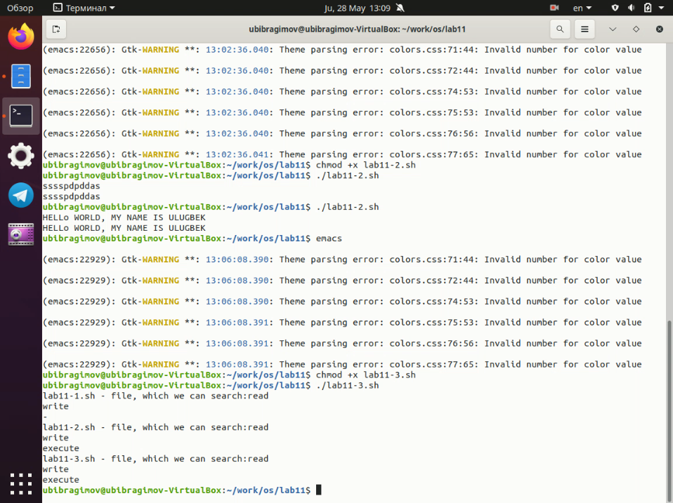
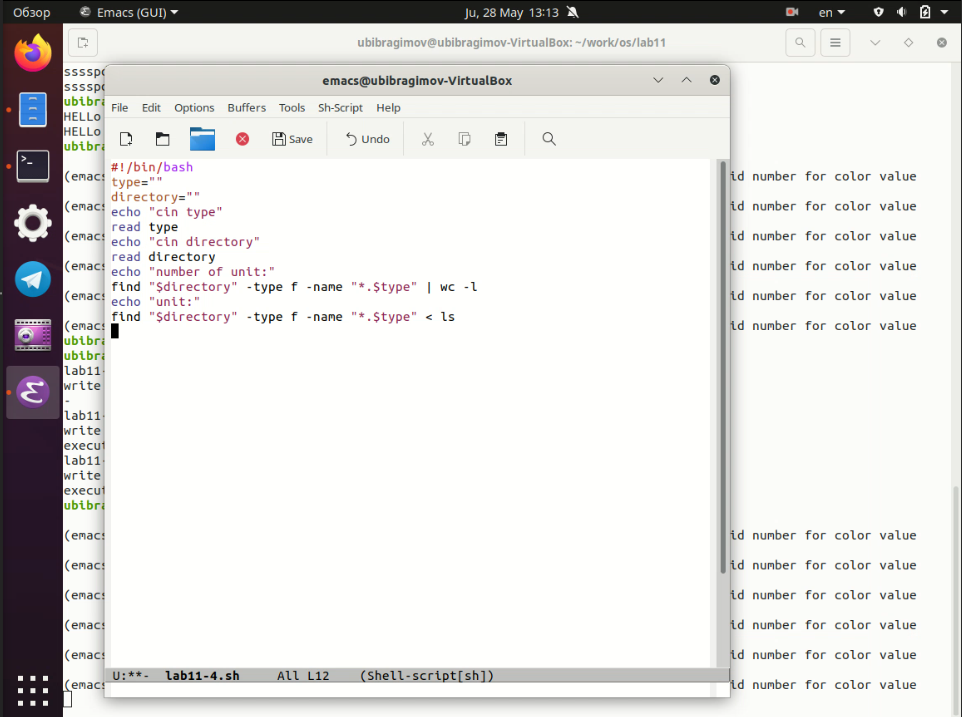
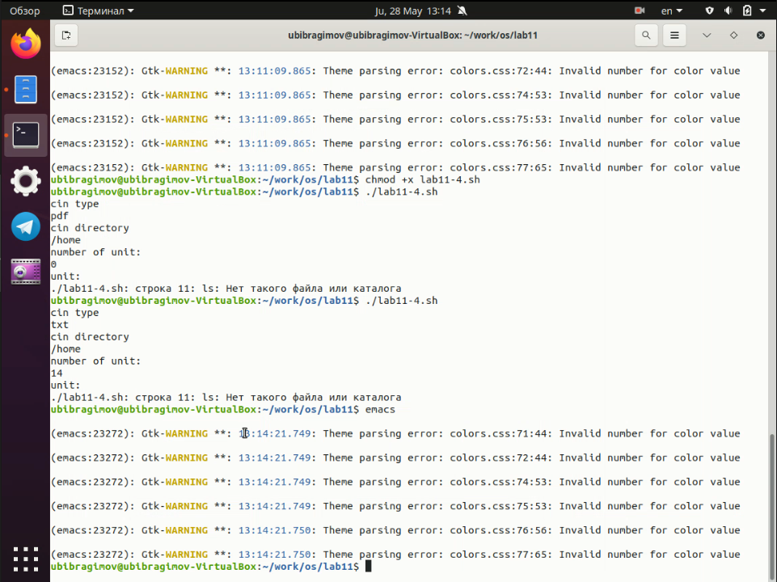

Титульный лист
Отчёт по лабораторной работе №11
Ибрагимов Улугбек Ботырхонович
Цель работы
Изучить основы программирования в оболочке ОС UNIX/Linux, научиться писать небольшие командные файлы
Ход выполнения работы:
-
Написать скрипт, который при запуске будет делать резервную копию самого себя (то есть файла, в котором содержится его исходный код) в другую директорию backup в вашем домашнем каталоге. При этом файл должен архивироваться одним из архиваторов на выбор - zip, bzip2 или tar. Способ использования командархивации необходимо узнать, изучив справку.



-
Написать пример командного файла, обрабатывающего любое произвольноечисло аргументов командной строки, в том числе превышающее десять. Например, скрипт может последовательно распечатывать значения всех переданных аргументов


-
Написать командный файл — аналог команды ls (без использования самой этойкоманды и команды dir). Требуется, чтобы он выдавал информацию о нужном каталоге и выводил информацию о возможностях доступа к файлам этого каталога


-
Написать командный файл, который получает в качестве аргумента командной строки формат файла .txt,.doc,.jpg,.pdfи т.д. и вычисляет количество таких файлов в указанной директории. Путь к директории также передаётся ввиде аргумента командной строки


Вывод
В ходе выполнения Лабораторной работы №11, были приобретены навыки по языку bash, а также изучил возможности которые дает этот язык в повседневном использовании
Контрольные вопросы
- Командная строка - промежуточный слой связи между пользователем и операционной системой, пользователь дает команды операционной системе через командную строку, а операционная система в свою очередь дает ответ пользователю через командную строку. Пример: POSIX, bash, zsh, cmd
- POSIX - стандартизированный интерфейс оболочки между пользователем и операционной системой. В теории, абсолютно все дистрибутивы выполненные на основе *nix, обладают возможностью кроссплатформенного исполнения инструкций, например инструкция для Ubuntu, MacOS, Solaris должна выглядеть одинаково при использовании гайдлайнов POSIX, отдельно все встраиваемые операционные системы обладают стандартом
POSIX Ready, что означает почти 99% (кроме специальных инструкций, например из-за различных архитектур ОС) поддерживаемость и на других дистрибутивах с такой пометкой
- В
bash могут быть определены одномерные массивы - переменные специального вида, доступ к которым осуществляется с одним именем, но с разным индексом. Для управления используются команды: name[%n%] = value
- Оператор
let - используется для суммирования
Оператор read - считывает строку из стандартного ввода и разбивает на слова
- Арифметические операции в
bash:
+ - сложение- - вычитание* - умножение/ - деление% - вычисление остатка** - возведение в степень+= - декремент-= - инкремент*= - умножение на заданное число/= - деление на заданное число
(( )) - запись условия if-else в оболочке bash- Стандартные переменные:
HOME - домашний каталог пользователяCDPATH - список каталогов разделенных двоеточиями и используемые при поиске пути встроенной командой cdIFS - символы, с помощью которых разделяются поляMAIL - если не задан MAILPATH, то пользователь будет информированMAILPATH - список имен файлов, которые ОС периодически проверяет на наличие письмаPATH - список каталогов, в которых командная оболочка ищет команды
' < > * ? | \ " & - метасимволы, которые значительно упрощают использование командной оболочки путем написания регулярных выражений- Экранирование осуществляется с помощью обратного слеша
\, для выражений используются двойные кавычки, а для экранирования группы метасимволов испольщуют одинарные кавычки
- Создаем текстовый файл с необходмой кодировкой, открываем терминал, переходим в директорию с файлов, и исполняем команду:
bash my_command [arguments], вводим необходимые аргументы после названия нашего файла и нажимаем Enter, так же можно изменить доступ и дать права sudo chmod u+x my_command и после изменения доступа можно вызывать коммандный файл без использования слова bash
- Для создания функций используется ключевое слово
function, после которого можно написать команды которые при исполнении файла будут исполнены в одном блоке function
- Заходим в терминал, пишем
ls -lrt, смотрим вывод, если в выводе есть символ d, то значит что искомый нами файл является директорийй (каталогом или папкой)
- Команда
set - выводит список переменных окружений
Команда typeset - ограничивает переменные (изменяет доступ, числа, массив или вообще осущесвляет экспорт данных)
Команда unset - удаляет переменную, а на самом деле устанавливает ее значение null
- В командный файл можно передать от одного до девяти файлов
$* — отображается вся командная строка или параметры оболочки$? — код завершения последней выполненной команды$$ — уникальный идентификатор процесса, в рамках которого выполняется командный процессор$! — номер процесса, в рамках которого выполняется последняя вызванная на выполнение в командном режиме команда$- — значение флагов командного процессора${#*} — возвращает целое число — количество слов, которые были результатом $${#name} — возвращает целое значение длины строки в переменной name${name[n]} — обращение к n-му элементу массива${name[*]} — перечисляет все элементы массива, разделённые пробелом${name[@]} — то же самое, но позволяет учитывать символы пробелы в самих переменных${name:-value} — если значение переменной name не определено, то оно будет заменено на указанное value${name:value} — проверяется факт существования переменной${name=value} — если name не определено, то ему присваивается значение value${name?value} — останавливает выполнение, если имя переменной не определено, и выводит value как сообщение об ошибке${name+value} — это выражение работает противоположно ${name-value}. Если переменная определена, то подставляется value${name#pattern} — представляет значение переменной name с удалённым самым коротким левым образцом (pattern)${#name[*]} и ${#name[@]} — эти выражения возвращают количество элементов в массиве name